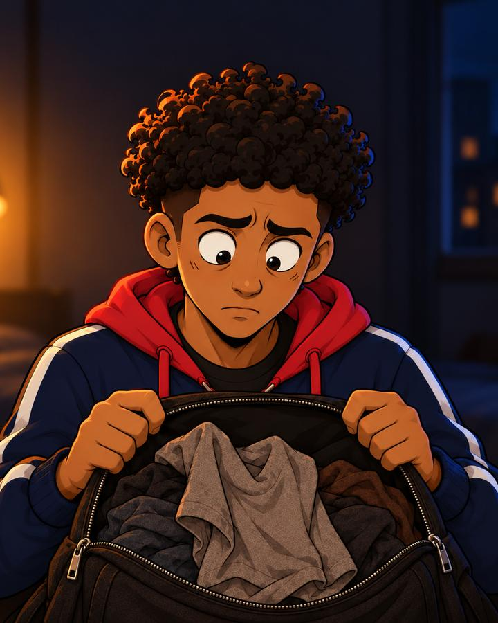
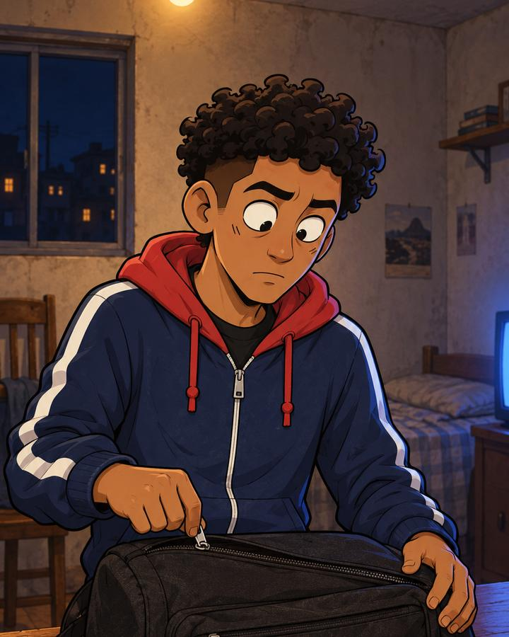
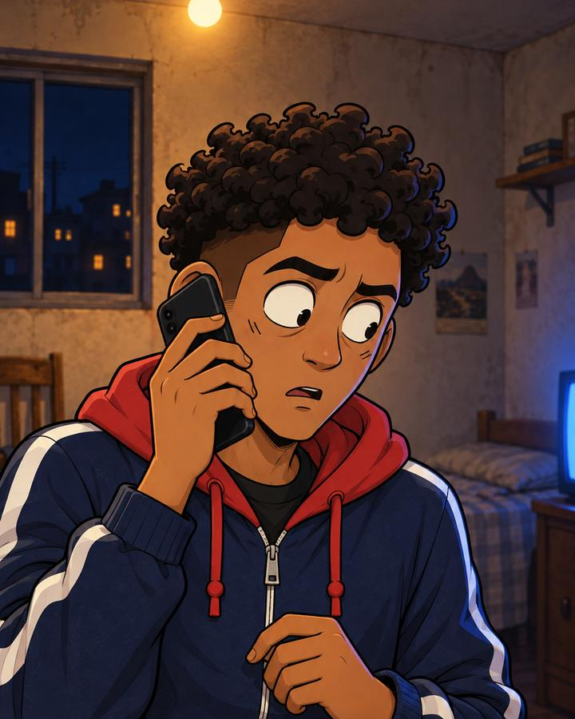
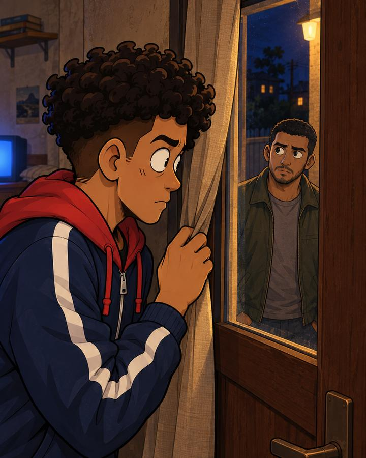
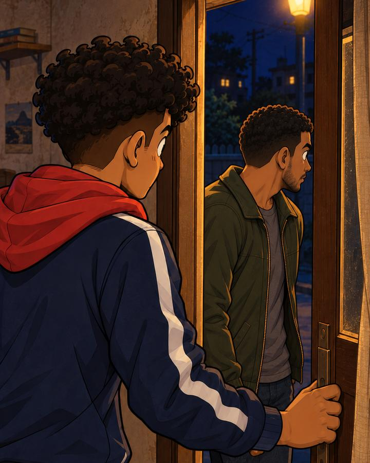
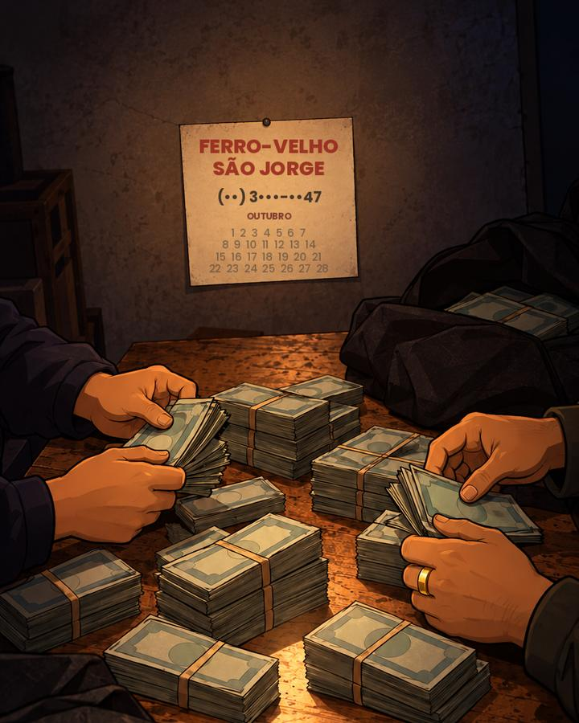
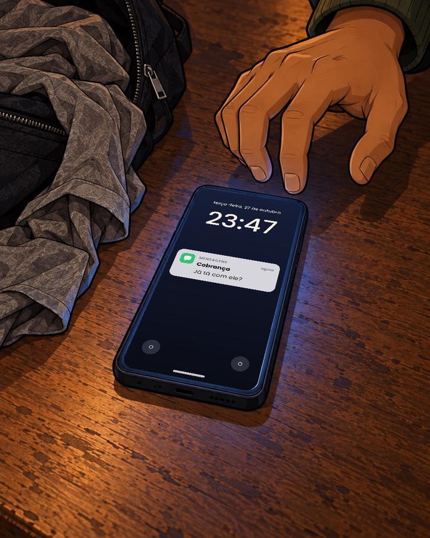
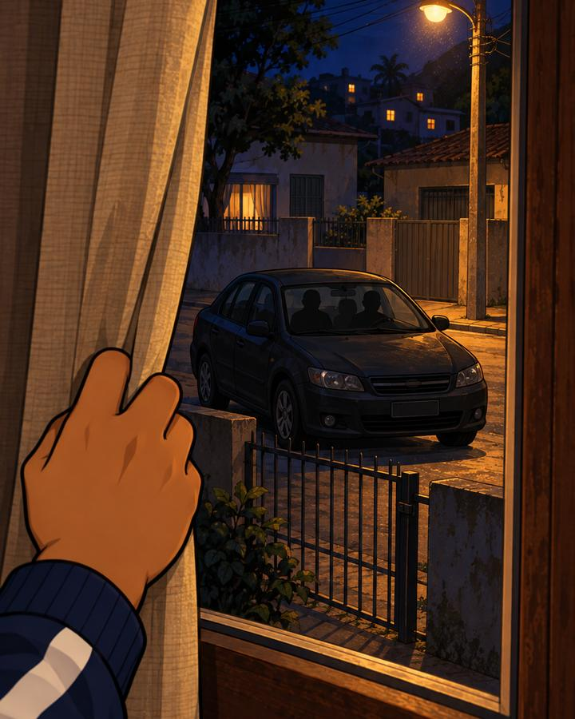

<title>A parte que faltou</title>
<meta name="claude:viewport-fit-sides" content="cover">
<meta name="description" content="O assalto deu certo. A sua parte, não. Uma série de suspense em desenho em que o público decide o que acontece.">
<link rel="preconnect" href="https://fonts.googleapis.com">
<link rel="preconnect" href="https://fonts.gstatic.com" crossorigin>
<link rel="stylesheet" href="https://fonts.googleapis.com/css2?family=Literata:ital,opsz,wght@0,7..72,400;0,7..72,600;1,7..72,400&family=Poppins:wght@500;600;700;800&display=swap">
<style>
/* Layout: one column read on a phone at night, like a case file; the series' yellow marks what you act on. */
:root {
  --bg: #13110f;          /* the night of the illustrations */
  --surface: #1d1a16;
  --raised: #26221c;
  --line: #3b342b;
  --fg: #f6f0e2;          /* the series' white */
  --muted: #b8ae9e;
  --accent: #fdb822;      /* the series' yellow: tags, votes, the call to act */
  --ink: #18160f;         /* text on yellow */
  --alert: #e9584c;
  --money: #34c077;       /* the counter's green */
  --display: "Poppins", "Arial Black", "Helvetica Neue", Arial, sans-serif;
  --prose: "Literata", Georgia, "Times New Roman", serif;
  --step-0: 1.0625rem;
  --step-1: 1.25rem;
  --step-2: 1.65rem;
  --step-3: clamp(2.3rem, 9vw, 3.6rem);
  color-scheme: dark;
}
* { box-sizing: border-box; }
html { scroll-behavior: smooth; }
body {
  margin: 0;
  background: var(--bg);
  color: var(--fg);
  font: 400 var(--step-0)/1.7 var(--prose);
  padding-left: max(16px, env(safe-area-inset-left, 0px));
  padding-right: max(16px, env(safe-area-inset-right, 0px));
}
body::before { content: ""; position: fixed; inset: 0 0 auto; height: env(safe-area-inset-top, 0px); z-index: 10; background: var(--bg); }
.topo {
  position: sticky; top: env(safe-area-inset-top, 0px); z-index: 5; background: var(--bg);
  border-bottom: 1px solid var(--line); margin-inline: calc(-1 * max(16px, env(safe-area-inset-left, 0px)));
  padding: 10px max(16px, env(safe-area-inset-right, 0px)) 10px max(16px, env(safe-area-inset-left, 0px));
}
.topo div { max-width: 640px; margin: 0 auto; display: flex; flex-wrap: wrap; align-items: center; gap: 6px 16px; }
.topo .marca { font-family: var(--display); font-weight: 800; letter-spacing: .04em; text-transform: uppercase; margin-right: auto; color: var(--fg); text-decoration: none; }
.topo a:not(.marca) { font-family: var(--display); font-weight: 600; font-size: .85rem; color: var(--muted); text-decoration: none; }
.topo a.destaque { color: var(--accent); }
main { max-width: 640px; margin: 0 auto; padding-block: 28px 48px; display: grid; gap: 60px; }
section, article { scroll-margin-top: 72px; }
img { display: block; width: 100%; max-width: 100%; height: auto; border-radius: 6px; }
a { color: var(--accent); }
a:focus-visible, .botao:focus-visible, input:focus-visible, button:focus-visible, summary:focus-visible { outline: 3px solid var(--accent); outline-offset: 3px; }
h1, h2, h3, .rotulo, .botao, .hud, .barra, .tag, .preco, button, label { font-family: var(--display); }
h1, h2, h3 { text-wrap: balance; margin: 0; line-height: 1.08; }
p { margin: 0; }

.tag {
  justify-self: start; display: inline-block; background: var(--accent); color: var(--ink);
  font-weight: 700; font-size: .8rem; letter-spacing: .08em; text-transform: uppercase;
  padding: .3em .75em; border-radius: 6px;
}
.rotulo { font-weight: 600; font-size: .78rem; letter-spacing: .14em; text-transform: uppercase; color: var(--muted); }
.acoes { display: flex; flex-wrap: wrap; gap: 12px; }
.botao {
  display: inline-block; text-decoration: none; font-weight: 700; font-size: 1rem; cursor: pointer;
  padding: .85em 1.3em; border-radius: 999px; border: 2px solid var(--accent); line-height: 1.2;
}
.botao.cheio { background: var(--accent); color: var(--ink); }
.botao.vazado { background: transparent; color: var(--accent); }

/* Opening */
.abertura { display: grid; gap: 20px; }
.abertura h1 { font-weight: 800; font-size: var(--step-3); text-transform: uppercase; letter-spacing: -.01em; }
.abertura h1 span { color: var(--accent); display: block; }
.gancho { font-family: var(--display); font-weight: 600; font-size: var(--step-1); line-height: 1.4; }
.aviso {
  display: grid; gap: 2px; border-left: 4px solid var(--alert); background: var(--surface);
  border-radius: 0 8px 8px 0; padding: 12px 14px; font-family: var(--display);
}
.aviso b { font-weight: 800; color: var(--fg); }
.aviso span { color: var(--muted); font-size: .92rem; }

/* Where the money is */
.dinheiro { display: grid; gap: 10px; }
.contas { display: grid; gap: 8px; }
.conta { display: grid; grid-template-columns: 1fr auto; gap: 4px 12px; align-items: baseline; background: var(--surface); border: 1px solid var(--line); border-radius: 8px; padding: 12px 14px; }
.conta .quem { font-family: var(--display); font-weight: 600; }
.conta .quanto { font-family: var(--display); font-weight: 800; font-size: 1.2rem; font-variant-numeric: tabular-nums; }
.conta .nota { grid-column: 1 / -1; font-size: .9rem; color: var(--muted); line-height: 1.5; }
.verde { color: var(--money); }
.vermelho { color: var(--alert); }
.estrelas { color: var(--accent); letter-spacing: .12em; }

/* Votes */
.votos { display: grid; gap: 14px; background: var(--surface); border: 1px solid var(--line); border-radius: 10px; padding: 18px 16px; }
.votos h3 { font-weight: 800; font-size: var(--step-1); text-transform: uppercase; }
.opcoes { display: grid; grid-template-columns: 1fr 1fr; gap: 10px; }
.opcoes span { display: grid; place-items: center; min-height: 64px; border-radius: 10px; font-family: var(--display); font-weight: 800; font-size: 1.3rem; }
.opcoes span:first-child { background: var(--accent); color: var(--ink); }
.opcoes span:last-child { background: var(--fg); color: var(--ink); }
.barra { display: grid; grid-template-columns: 1fr auto; gap: 6px 12px; font-weight: 700; }
.barra .trilho { grid-column: 1 / -1; height: 12px; background: var(--line); border-radius: 99px; overflow: hidden; }
.barra .cheia { display: block; height: 100%; background: var(--muted); border-radius: 99px; }
.barra.vence .num { color: var(--accent); }
.barra.vence .cheia { background: var(--accent); }
.barra:not(.vence) { color: var(--muted); }

/* The pass */
.entre { display: grid; gap: 18px; border: 2px solid var(--accent); border-radius: 12px; padding: 22px 18px; }
.entre h2 { font-weight: 800; font-size: var(--step-2); text-transform: uppercase; }
.preco { font-weight: 800; font-size: 2.4rem; color: var(--accent); line-height: 1; }
.preco small { font-size: .9rem; font-weight: 600; color: var(--muted); letter-spacing: .02em; }
.ganhos { display: grid; gap: 10px; padding: 0; margin: 0; list-style: none; }
.ganhos li { background: var(--surface); border: 1px solid var(--line); border-radius: 8px; padding: 12px 14px; line-height: 1.45; min-width: 0; }
.ganhos b { display: block; font-family: var(--display); font-weight: 700; }
.vagas { display: flex; flex-wrap: wrap; gap: 6px 16px; font-family: var(--display); font-weight: 600; font-size: .95rem; }
.vagas b { color: var(--accent); }
.creditos {
  display: grid; justify-items: center; gap: 4px; text-align: center; background: #000;
  border-radius: 8px; padding: 18px 12px; font-family: var(--display);
}
.creditos .nome { font-weight: 800; font-size: 1.3rem; color: var(--accent); overflow-wrap: anywhere; }
form { display: grid; gap: 14px; }
label { display: grid; gap: 6px; font-weight: 600; font-size: .95rem; }
input[type="text"], input[type="email"] {
  font: 500 1rem var(--display); color: var(--fg); background: var(--surface);
  border: 1px solid var(--line); border-radius: 8px; padding: .8em .9em; width: 100%;
}
.consentimento { display: grid; grid-template-columns: auto 1fr; gap: 10px; align-items: start; font-weight: 500; font-size: .9rem; line-height: 1.45; color: var(--muted); }
.consentimento input { width: 20px; height: 20px; margin-top: 2px; accent-color: var(--accent); }
.erro { color: var(--alert); font-family: var(--display); font-size: .9rem; }
.pix { display: grid; gap: 10px; background: var(--raised); border-radius: 10px; padding: 16px; }
.pix h3 { font-weight: 800; font-size: var(--step-1); }
.chave { display: flex; flex-wrap: wrap; align-items: center; gap: 8px 12px; }
.chave code { font: 600 1rem/1.4 var(--display); color: var(--accent); overflow-wrap: anywhere; user-select: all; }
.chave button { font-weight: 700; font-size: .85rem; background: transparent; color: var(--accent); border: 1px solid var(--accent); border-radius: 999px; padding: .45em .9em; cursor: pointer; }
.miudo { font-size: .9rem; color: var(--muted); line-height: 1.6; display: grid; gap: .6em; }

/* Parts */
.parte { display: grid; gap: 22px; }
.parte header { display: grid; gap: 10px; }
.parte h2 { font-weight: 800; font-size: var(--step-2); text-transform: uppercase; }
.texto { display: grid; gap: 1.05em; }
.texto .fala { padding-left: 1em; border-left: 2px solid var(--line); }
.texto .pausa { font-family: var(--display); font-weight: 700; letter-spacing: .02em; }
.texto em { color: var(--muted); }
.cena { display: grid; gap: 8px; margin: 0; }
.cena figcaption { font-family: var(--display); font-size: .82rem; color: var(--muted); }

/* Questions and terms */
.perguntas { display: grid; gap: 10px; }
.perguntas h2, .termos h2 { font-weight: 800; font-size: var(--step-2); text-transform: uppercase; }
details { background: var(--surface); border: 1px solid var(--line); border-radius: 8px; padding: 12px 14px; }
summary { font-family: var(--display); font-weight: 700; cursor: pointer; }
details p { margin-top: 8px; color: var(--muted); line-height: 1.6; }
.termos { display: grid; gap: 10px; font-size: .92rem; color: var(--muted); line-height: 1.6; }
.termos h3 { font-weight: 700; font-size: 1rem; color: var(--fg); }

footer { border-top: 1px solid var(--line); padding-top: 22px; display: grid; gap: 10px; font-size: .92rem; color: var(--muted); }
footer .marca { font-family: var(--display); font-weight: 800; color: var(--fg); text-transform: uppercase; letter-spacing: .04em; }
footer nav { display: flex; flex-wrap: wrap; gap: 8px 18px; font-family: var(--display); font-weight: 600; }

@media (prefers-reduced-motion: reduce) { html { scroll-behavior: auto; } }
</style>

<header class="topo">
  <div>
    <a class="marca" href="#inicio">Golpe Cartoon</a>
    <a class="destaque" href="#entre">Entrar na história</a>
    <a href="#partes">Partes</a>
    <a href="#perguntas">Perguntas</a>
  </div>
</header>

<main>
  <section class="abertura" id="inicio" aria-labelledby="titulo">
    <span class="tag">Série em desenho · você decide</span>
    <h1 id="titulo">A parte <span>que faltou</span></h1>
    <p class="gancho">O assalto deu certo. A sua parte, não.</p>
    
    <p>Seu parceiro ficou com dez milhões. Você ficou com o rosto no jornal. A cada parte, o público decide nos comentários o que o Zinho faz.</p>
    <div class="aviso" role="status">
      <b>Parte 3: <span data-vagas>10</span> vagas de aliado abertas</b>
      <span>Fecham em <span data-prazo>30 de outubro, às 21h</span>, junto com a votação da Parte 2.</span>
    </div>
    <div class="acoes">
      <a class="botao cheio" href="#entre">Quero entrar na história</a>
      <a class="botao vazado" href="https://www.instagram.com/golpecartoon/">Assistir no Instagram</a>
    </div>
  </section>

  <section class="dinheiro" aria-labelledby="t-dinheiro">
    <span class="rotulo" id="t-dinheiro">Onde está o dinheiro</span>
    <div class="contas">
      <div class="conta"><span class="quem">Com o seu parceiro</span><span class="quanto verde">R$ 10.000.000</span>
        <span class="nota">Em dinheiro vivo. Ele não atende.</span></div>
      <div class="conta"><span class="quem">Com você</span><span class="quanto vermelho">R$ 0</span>
        <span class="nota">Na mochila da divisão, só roupa velha. Suspeita: <span class="estrelas" aria-label="cinco estrelas">★★★★★</span></span></div>
      <div class="conta"><span class="quem">A dívida do seu amigo</span><span class="quanto vermelho">R$ 80.000</span>
        <span class="nota">Com quem bancou o assalto. Para pagar, ele vendeu o seu nome.</span></div>
    </div>
  </section>

  <section class="votos" aria-labelledby="t-voto">
    <span class="rotulo">Votação aberta · Parte 2</span>
    <h3 id="t-voto">Lá fora, um carro de farol apagado. Fugir ou ficar?</h3>
    <div class="opcoes" aria-hidden="true"><span>FUGIR</span><span>FICAR</span></div>
    <p>Comenta no vídeo da Parte 2. Deixa também um nome para o amigo do Zinho: o mais curtido vira o nome dele na Parte 3.</p>
    <div class="acoes">
      <a class="botao vazado" href="https://www.instagram.com/golpecartoon/">Votar no Instagram</a>
      <a class="botao vazado" href="https://www.youtube.com/@golpecartoon/shorts">Votar no YouTube</a>
    </div>
  </section>

  <section class="entre" id="entre" aria-labelledby="t-entre">
    <span class="rotulo">Passe de aliado</span>
    <h2 id="t-entre">Vire aliado do Zinho</h2>
    <p class="preco">R$ 9,90 <small>por parte, no Pix</small></p>
    <p>O Zinho foi traído e precisa de gente do lado dele. Com o passe, o seu @ entra na próxima parte.</p>
    <ul class="ganhos">
      <li><b>Dentro do episódio</b>Seu @ aparece na história: na lista de contatos do celular do Zinho, num muro da rua, na reportagem da TV ou nos créditos do fim.</li>
      <li><b>Na legenda do post</b>Seu @ na legenda do vídeo no Instagram, para quem assistir chegar até você.</li>
      <li><b>Número de aliado</b>Você ganha um número, como #001, que fica com você nas próximas partes.</li>
    </ul>
    <div class="creditos" aria-label="Exemplo dos créditos no fim do vídeo">
      <span class="rotulo">Aliados desta parte</span>
      <span class="nome">@seuperfil · #001</span>
    </div>
    <p class="vagas"><span><b data-vagas>10</b> vagas na Parte 3</span><span>Fecham em <span data-prazo>30 de outubro, às 21h</span></span></p>

    <form id="passe" name="aliados" method="POST" data-netlify="true" netlify-honeypot="campo-extra" novalidate>
      <input type="hidden" name="form-name" value="aliados">
      <p hidden><label>Não preencha <input name="campo-extra" type="text" id="campo-extra"></label></p>
      <label for="arroba">Seu @ no Instagram
        <input type="text" id="arroba" name="arroba" placeholder="@seuperfil" autocomplete="username" required>
      </label>
      <label for="email">Seu e-mail
        <input type="email" id="email" name="email" placeholder="voce@email.com" autocomplete="email" required>
      </label>
      <label class="consentimento" for="autorizo">
        <input type="checkbox" id="autorizo" name="autorizo" value="sim" required>
        <span>Autorizo usar o meu @ numa história de ficção da Golpe Cartoon e li os <a href="#termos">termos</a>.</span>
      </label>
      <p class="erro" id="erro" role="alert" hidden></p>
      <div class="acoes"><button class="botao cheio" type="submit">Virar aliado por R$ 9,90</button></div>
    </form>

    <div class="pix" id="pix" hidden>
      <h3>Falta só o Pix</h3>
      <p>Pague <b>R$ 9,90</b> para a chave abaixo e mande o comprovante no direct do Instagram. Assim que confirmarmos, o seu @ entra na lista da Parte 3.</p>
      <div class="chave">
        <code id="chave-pix" data-chave-pix>chave Pix a definir</code>
        <button type="button" id="copiar">Copiar chave</button>
      </div>
      <div class="acoes"><a class="botao vazado" href="https://ig.me/m/golpecartoon">Mandar o comprovante no direct</a></div>
    </div>

    <div class="miudo">
      <p>Quem pagar depois do prazo, ou com as vagas esgotadas, entra na parte seguinte.</p>
      <p>O passe não muda a votação: nos comentários, o voto de todo mundo vale igual.</p>
    </div>
  </section>

  <div id="partes" class="parte" aria-label="Partes">
    <span class="rotulo">Os capítulos até aqui · chegou agora? comece pela Parte 1</span>
  </div>

  <article class="parte" id="parte-1" aria-labelledby="t-parte-1">
    <header>
      <span class="tag">Parte 1</span>
      <h2 id="t-parte-1">A mochila</h2>
      <span class="rotulo">Publicada em 26 de outubro</span>
    </header>
    <figure class="cena"></figure>
    <div class="texto">
      <p>O assalto deu certo. Seu parceiro ficou com dez milhões. Você ficou com o rosto no jornal.</p>
      <p>A televisão do quarto está ligada no noticiário da noite. Na tela, a sua foto e o seu nome: Zinho. Embaixo, uma faixa amarela: primeiro suspeito identificado.</p>
      <p>Você baixa o volume e puxa a mochila preta que recebeu na divisão. Abre o zíper devagar.</p>
      <p class="pausa">Roupa velha.</p>
      <p class="pausa">Nenhuma nota.</p>
      <p>Você confere os bolsos de fora, depois os de dentro. Revira o fundo. Vira a mochila de cabeça para baixo e espalha tudo no chão: uma camiseta furada, uma calça de moletom, um casaco que nunca foi seu. Nada.</p>
      <p>Há vinte minutos, vocês ainda estavam juntos. Agora, ninguém atende. O telefone chama até cair.</p>
      <p>Você fotografa a mochila aberta e manda para o amigo que colocou você no grupo. O cara que cresceu na sua rua. O que olhou nos seus olhos e prometeu: “Eu garanto a sua parte.”</p>
      <p>Ele visualiza. Não responde.</p>
      <p>Você olha de novo para a televisão e, dessa vez, reconhece a fotografia. É a mesma que você mandou para ele semanas atrás, quando disseram que precisavam conhecer o seu rosto antes de te chamar.</p>
    </div>
    <figure class="cena"></figure>
    <div class="texto">
      <p>Chega um áudio.</p>
      <p class="fala">“Eu estava devendo para eles. Disseram que a dívida acabava se eu colocasse alguém no meu lugar.”</p>
      <p>Você escuta outra vez. E outra.</p>
      <p>Antes de responder, alguém bate à porta. Duas batidas, secas.</p>
      <p>Pela janela, atrás da cortina, você vê o seu amigo no portão, olhando para os lados.</p>
      <p>É o homem que acabou de admitir que vendeu o seu nome.</p>
      <p class="pausa">Você deixa ele entrar?</p>
    </div>
    <figure class="cena"></figure>
    <div class="votos" aria-label="Resultado da votação da Parte 1">
      <span class="rotulo">Parte 1 · vocês votaram</span>
      <div class="barra vence"><span>Abrir</span><span class="num">86%</span><span class="trilho"><span class="cheia" style="width:86%"></span></span></div>
      <div class="barra"><span>Não abrir</span><span class="num">14%</span><span class="trilho"><span class="cheia" style="width:14%"></span></span></div>
    </div>
  </article>

  <article class="parte" id="parte-2" aria-labelledby="t-parte-2">
    <header>
      <span class="tag">Parte 2</span>
      <h2 id="t-parte-2">A dívida</h2>
      <span class="rotulo">Publicada em 28 de outubro</span>
    </header>
    <figure class="cena"></figure>
    <div class="texto">
      <p>Vocês decidiram: abrir.</p>
      <p>Você destranca a porta. Ele entra sem pedir licença, passa a chave por dentro e apaga a luz da sala. Fica um tempo parado no escuro, ouvindo a rua.</p>
      <p class="fala">“Eles tão te procurando. E agora tão me procurando também.”</p>
      <p>Ele vendeu o seu nome. Nesta história, ele ainda não tem um. <em>O nome dele está em votação nos comentários do vídeo da Parte 2.</em></p>
      <p>Você não oferece cadeira. Ele senta mesmo assim, na mesa onde a mochila ainda está aberta. Você pergunta uma coisa só: quanto ele devia.</p>
      <p class="fala">“Oitenta mil.”</p>
      <p>Para quem?</p>
      <p class="fala">“Pra quem bancou o assalto.”</p>
      <p>Ele fala rápido, como quem ensaiou no caminho. Perdeu um dinheiro que não era dele. Eles deram uma saída: trazer alguém de fora, alguém que ninguém ligasse ao grupo. Se desse errado, a culpa ficava com essa pessoa.</p>
      <p class="fala">“Eles juraram que ninguém ia ver o seu rosto.”</p>
      <p>Mas foi ele quem entregou a sua foto.</p>
      <p class="fala">“Eu não tive escolha. Eles sabiam onde a minha mãe mora.”</p>
      <p>Você conhece essa mãe. Ela te dava almoço quando vocês eram moleques.</p>
      <p>Você pede uma prova. Palavra, ele já gastou.</p>
    </div>
    <figure class="cena">
      <figcaption>A foto da noite da divisão. Repara na mão da direita.</figcaption></figure>
    <div class="texto">
      <p>Ele mostra o celular. Uma foto escondida, tirada na noite da divisão: a mesa coberta de dinheiro, as mãos de quem contava. Nenhum rosto. Numa das mãos, um anel grosso de ouro.</p>
      <p>Você amplia a imagem. Na parede, um calendário de ferro-velho, com nome e telefone.</p>
      <p>Você liga do seu celular. Toca três vezes. Do outro lado, alguém atende: “Ferro-Velho São Jorge.” Você desliga sem dizer nada.</p>
      <p>O lugar existe. Pelo menos essa parte é verdade.</p>
    </div>
    <figure class="cena"></figure>
    <div class="texto">
      <p>Então o celular dele vibra em cima da mesa. A tela acende. Uma mensagem de um contato salvo só como “Cobrança”:</p>
      <p class="fala">“Já tá com ele?”</p>
      <p>Você pergunta o que é aquilo. Ele não responde a mensagem. Nem a você.</p>
      <p>Lá fora, um carro para em frente ao portão. De farol apagado.</p>
      <p class="pausa">Fugir ou ficar?</p>
    </div>
    <figure class="cena"></figure>
  </article>

  <section class="parte" aria-labelledby="t-parte-3">
    <header>
      <span class="tag">Parte 3</span>
      <h2 id="t-parte-3">A noite</h2>
      <span class="rotulo">Sai depois da votação · com os aliados da Parte 3</span>
    </header>
  </section>

  <section class="perguntas" id="perguntas" aria-labelledby="t-perguntas">
    <h2 id="t-perguntas">Perguntas</h2>
    <details><summary>A história é real?</summary><p>Não. Personagens, lugares e fatos são ficção. As ilustrações e as vozes são feitas com inteligência artificial.</p></details>
    <details><summary>Como eu voto?</summary><p>Comentando no vídeo da parte, no Instagram, no TikTok ou no YouTube. A opção mais comentada vira a parte seguinte.</p></details>
    <details><summary>Até quando posso virar aliado?</summary><p>Até o prazo da parte ou até as vagas acabarem. Quem pagar depois entra na parte seguinte.</p></details>
    <details><summary>Posso entrar de novo em outra parte?</summary><p>Pode. Cada passe vale para uma parte, e o seu número de aliado continua o mesmo.</p></details>
    <details><summary>Errei o meu @. E agora?</summary><p>Manda uma mensagem no direct do Instagram antes do prazo que a gente corrige.</p></details>
    <details><summary>E se eu desistir ou a parte não sair?</summary><p>Você pode desistir em até 7 dias depois de pagar, e devolvemos o valor. Se a parte não for publicada, devolvemos também.</p></details>
  </section>

  <section class="termos" id="termos" aria-labelledby="t-termos">
    <h2 id="t-termos">Termos e privacidade</h2>
    <h3>O passe</h3>
    <p>O passe de aliado custa R$ 9,90 e vale para uma parte. O seu @ aparece no episódio, num lugar escolhido pela produção, e na legenda do post no Instagram. Não usamos @ ofensivo nem o @ de outra pessoa, e podemos recusar um pedido devolvendo o valor.</p>
    <h3>Seus dados</h3>
    <p>Pedimos só o seu @ e o seu e-mail, para colocar o seu @ na história e falar com você sobre o passe. Não vendemos nem passamos esses dados para ninguém. Para corrigir ou apagar os seus dados, mande uma mensagem no direct do Instagram.</p>
  </section>

  <footer>
    <span class="marca">Golpe Cartoon</span>
    <nav aria-label="Perfis">
      <a href="https://www.instagram.com/golpecartoon/">Instagram</a>
      <a href="https://www.youtube.com/@golpecartoon">YouTube</a>
      <a href="https://ig.me/m/golpecartoon">Falar no direct</a>
    </nav>
    <p>As ilustrações e as vozes da série são feitas com inteligência artificial. Personagens, lugares e fatos são ficção.</p>
  </footer>
</main>

<script>
(function () {
  var form = document.getElementById('passe');
  var erro = document.getElementById('erro');
  var pix = document.getElementById('pix');
  form.addEventListener('submit', function (ev) {
    ev.preventDefault();
    var arroba = form.arroba.value.trim().replace(/^@*/, '');
    var email = form.email.value.trim();
    var msg = '';
    if (!/^[A-Za-z0-9._]{1,30}$/.test(arroba)) msg = 'Escreva o seu @ do Instagram, só com letras, números, ponto ou sublinhado.';
    else if (!/^[^\s@]+@[^\s@]+\.[^\s@]+$/.test(email)) msg = 'Confira o seu e-mail.';
    else if (!form.autorizo.checked) msg = 'Marque a autorização para usarmos o seu @ na história.';
    erro.textContent = msg;
    erro.hidden = !msg;
    if (msg) return;
    form.arroba.value = '@' + arroba;
    // On the published site, Netlify keeps the request; in a preview there is nowhere to send it.
    var dados = new URLSearchParams(new FormData(form)).toString();
    fetch('/', { method: 'POST', headers: { 'Content-Type': 'application/x-www-form-urlencoded' }, body: dados })
      .catch(function () {})
      .then(function () { form.hidden = true; pix.hidden = false; pix.scrollIntoView({ block: 'nearest' }); });
  });
  document.getElementById('copiar').addEventListener('click', function () {
    var chave = document.getElementById('chave-pix');
    var botao = this;
    var feito = function () { botao.textContent = 'Copiada'; };
    var selecionar = function () {
      var r = document.createRange(); r.selectNodeContents(chave);
      var s = window.getSelection(); s.removeAllRanges(); s.addRange(r);
      botao.textContent = 'Selecionada: copie';
    };
    try { navigator.clipboard.writeText(chave.textContent.trim()).then(feito, selecionar); } catch (e) { selecionar(); }
  });
})();
</script>
